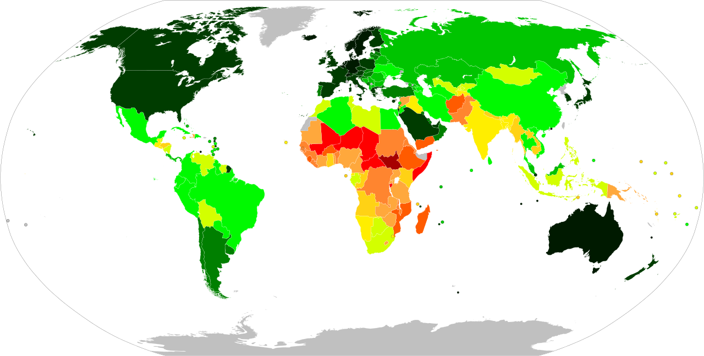

Lesson 1 : Pambansang Kaunlaran
Isang estado ng bansa kung saan tinatamasa ng mga tao mula sa pinakamababang uri ng mamamayan ang nakakamanghang pagbabago sa ekonomiya at pamumuhay
Mga Konsepto ng Pambansang Kaunlaran
- 1. Pagbabago
- Paraan upang maging iba o naiiba
- Proseso ng pag-iiba o pagkakaroon ng kaibahan sa lipunan at ekonomiya
- 2. Pag-unlad
- Pagbabago mula sa mababa tungo sa mataas na antas ng pamumuhay
- Pag-angat, pagsulong, o paglago sa pangkalahatang aspeto ng pamumuhay
- Isang progresibo at aktibong proseso at ang pagsulong ay produkto nito (FAJARDO)
- Ang kaunlaran ay matatamo lamang kung mapauunlad ang yaman ng buhay ng mga tao kaysa sa yaman ng ekonomiya nito (AMARTYA SEN)
- 3. Pagsulong
- Pag-usad tungo sa iyong layunin o goal
- Pagpapaunlad ng kakayahan, kaalaman, at abilidad upang makasabay sa agos ng buhay
- 4. Ebolusyon
- Pagbabago sa mga katangian sa loob ng mahabang panahon
- Anuman ang unang dumating ay mas mabuti sa sinundang panahon
| DALAWANG KONSEPTO NG PAG-UNLAD (TODARO & SMITH, 2012) | |
|---|---|
| TRADISYUNAL | Pagtamo ng patuloy na pagtaas ng income per capita. |
| MAKABAGO | Dapat na kumakatawan sa malawakang pagbabago sa buong sistemang panlipunan. |
MGA SALIK NA MAAARING MAKATULONG SA PAGSULONG NG EKONOMIYA
- 1. Likas na yaman
- 2. Yamang-tao
- 3. Kapital
- 4. Teknolohiya at Inobasyon
MGA PALATANDAAN NG PAG-UNLAD
- 1. Makatwiran at dinamikong kaayusan ng panlipunan
- 2. Kasaganaan at kasarinlan
- 3. Kalayaan sa kahirapan, hanapbuhay para sa lahat, umaangat na istandard ng pamumuhay, at mainam na uri ng buhay para sa lahat
- 4. Sapat na mga lingkurang panlipunan
- 5. Katarungang panlipunan
SUKATAN NG KAUNLARAN NG BANSA AYON SA UNITED NATIONS
- Maliban sa paggamit ng GDP at GNP, ginagamit ang Human Development Index (HDI) bilang isa sa mga panukat sa antas ng pag-unlad ng isang bansa.
- Human Development Index (HDI) Pangkalahatang sukat ng kakayahan ng isang bansa na matugunan ang mahahalagang aspekto ng kaunlarang pantao. Kabilang dito ang kalusugan, edukasyon, at antas ng pamumuhay.


ANTAS NG KAUNLARAN NG BANSA
Maunlad na Bansa o Developed Economies
- Mga bansang may mataas na GDP, income per capita, at mataas na HDI Umuunlad na Bansa o Developing Economies
- Mga bansang may mga industriyang kasalukuyang pinauunlad ngunit wala pang mataas na antas ng industriyalisasyon
- Hindi pantay ang GDP at HDI
Papaunlad na Bansa o Underdeveloped Economies
- Mga bansang kung ihahambing sa iba ay kulang sa industriyalisasyon
- Mababang antas ng agrikultura at mababang GDP, income per capita, at HDI
MGA TUNGKULIN PARA SA PAG-UNLAD NG BANSA
- Suportahan ang ating pamahalaan.
- Sundin at igalang ang batas.
- Alagaan ang ating kapaligiran.
- Tumulong sa pagpuksa sa korapsyon at katiwalian sa pamahalaan.
- Maging produktibo.
- Tangkilikin ang mga produktong Pilipino.
- Magtipid ng enerhiya.
- Makilahok sa mga gawaing pansibiko.
MGA GAMPANIN NG MAMAMAYAN SA PAG-UNLAD NG BANSA
- Tamang pagbabayad ng buwis
- Makialam
- Bumuo o sumali sa kooperatiba
- Pagnenegosyo
- Tamang pagboto
- Pagpapatupad at pakikilahok sa mga proyektong pangkaunlaran sa komunidad
- Pakikilahok sa pamamahala ng bansa (participative governance)
- Pagtangkilik sa mga produktong Pilipino
Mapanagutan
Maabilidad
Maalam
Makabansa
↑ Back to Top